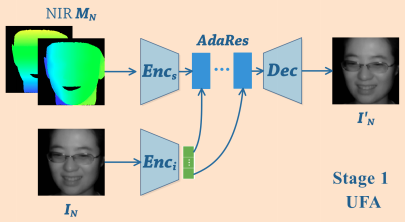
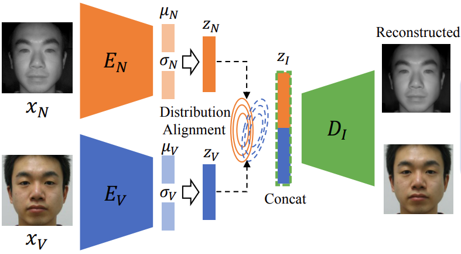
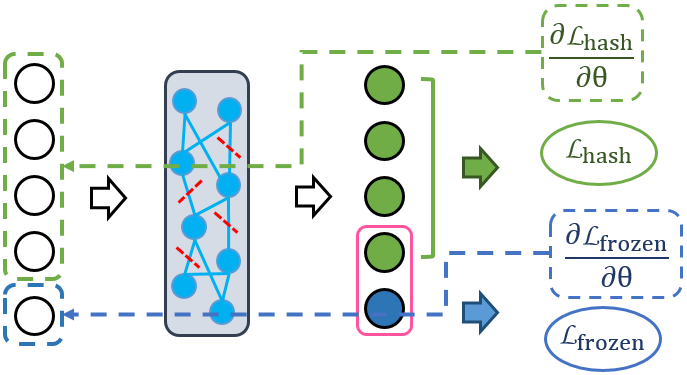

|
Chaoyou Fu 傅朝友
Ph.D. Candidate
|
News
2021.01.12, One paper is accepted by IEEE TPAMI
2020.12.18, One paper is accepted by IEEE TIFS
2020.11.02, One paper is accepted by NeurIPS 2020
2020.02.24, One paper is accepted by CVPR 2020
2019.09.04, One paper is accepted by NeurIPS 2019
2019.05.10, One paper is accepted by IJCAI 2019
Biography
I am a Ph.D. Candidate of CRIPAC (led by Prof. Tieniu Tan), National Laboratory of Pattern Recognition (NLPR), Institute of Automation, Chinese Academy of Sciences (CASIA) under the supervision of Prof. Ran He. Before that, I received my Bachelor degree from Anhui University (AHU) in 2017 under the supervision of Prof. Shuping He. My research interests lie in face recognition and image synthesis.
Education
 |
University of Chinese Academy of Sciences (UCAS) Sep, 2017 - Now |
|
Anhui University (AHU) Aug, 2013 - Jun, 2017 |
Publications
 |
DVG-Face: Dual Variational Generation for Heterogeneous Face Recognition |
 |
High Fidelity Face Manipulation with Extreme Poses and Expressions |
|
AOT: Appearance Optimal Transport Based Identity Swapping for Forgery Detection |
|  |
Cross-Spectral Face Hallucination via Disentangling Independent Factors |
|  |
Dual Variational Generation for Low Shot Heterogeneous Face Recognition |
|  |
Neurons Merging Layer: Towards Progressive Redundancy Reduction for Deep Supervised Hashing |
Academic Services
Conference Reviewer: CVPR2021, AAAI2021
Honors and Awards
2020.12, Excellent Student of CRIPAC
2019.10, National Scholarship (教育部研究生国家奖学金)
2018.06, Excellent Student of CAS (中国科学院优秀学生)
2017.11, Scholarship for College Students of CAS (中国科学院大学生奖学金)
2017.06, Outstanding Graduate of Anhui Province (安徽省优秀毕业生)
2015.11, National Scholarship (教育部本科生国家奖学金)
2015.08, Second Prize in the National Smart Car Competition (教育部“飞思卡尔”杯国赛二等奖)